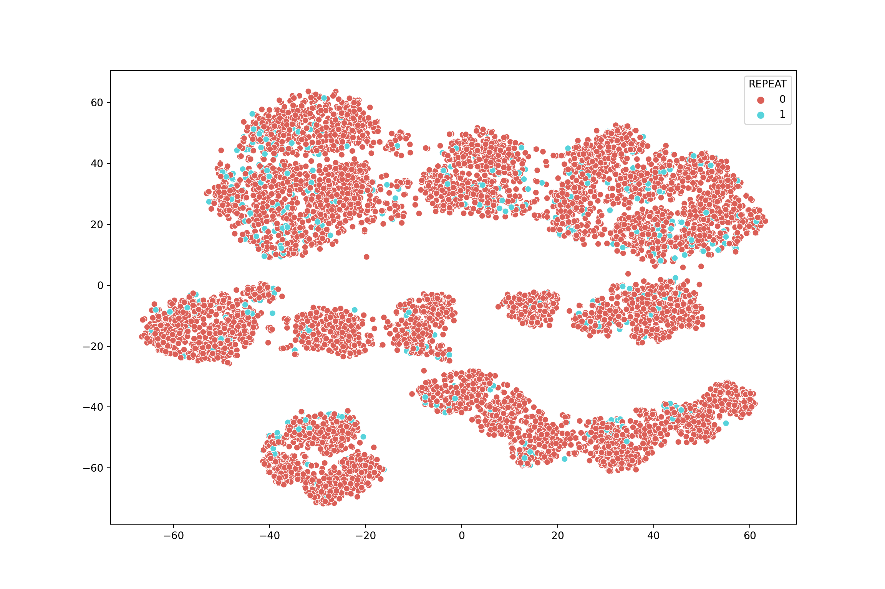
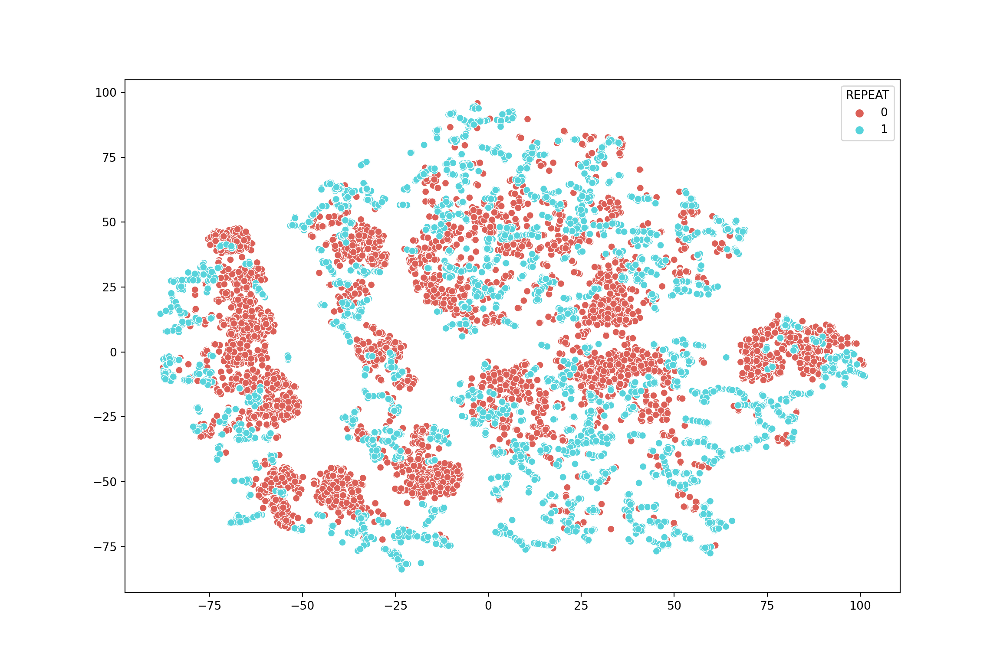
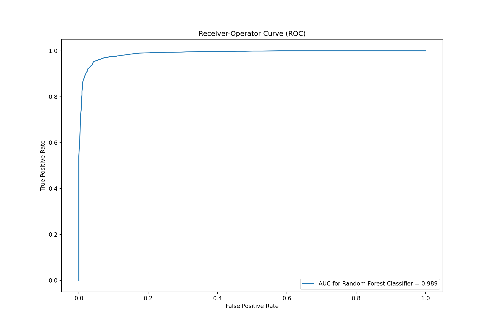
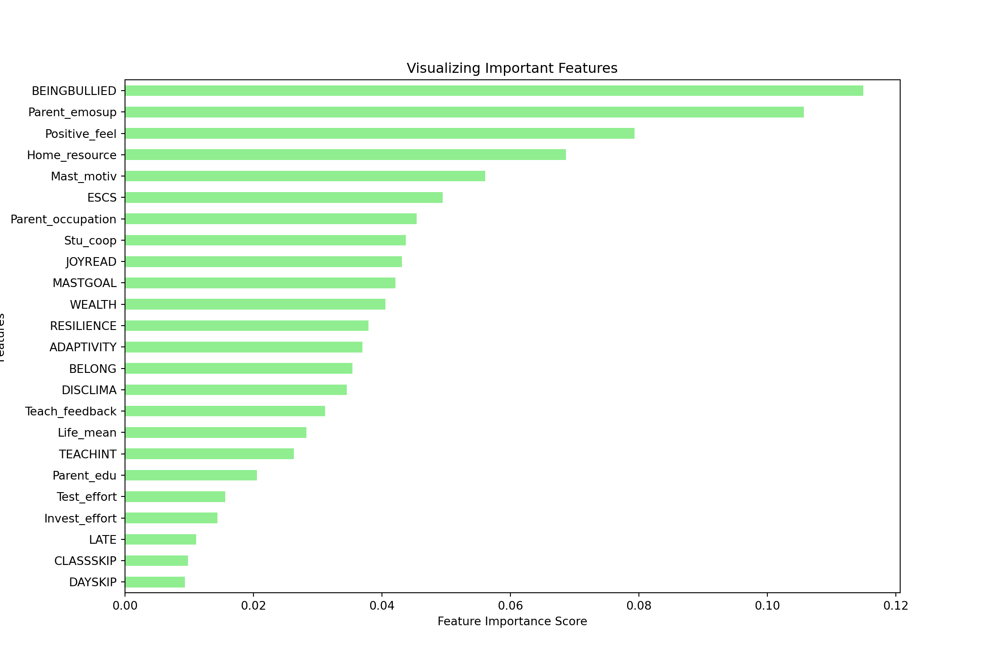
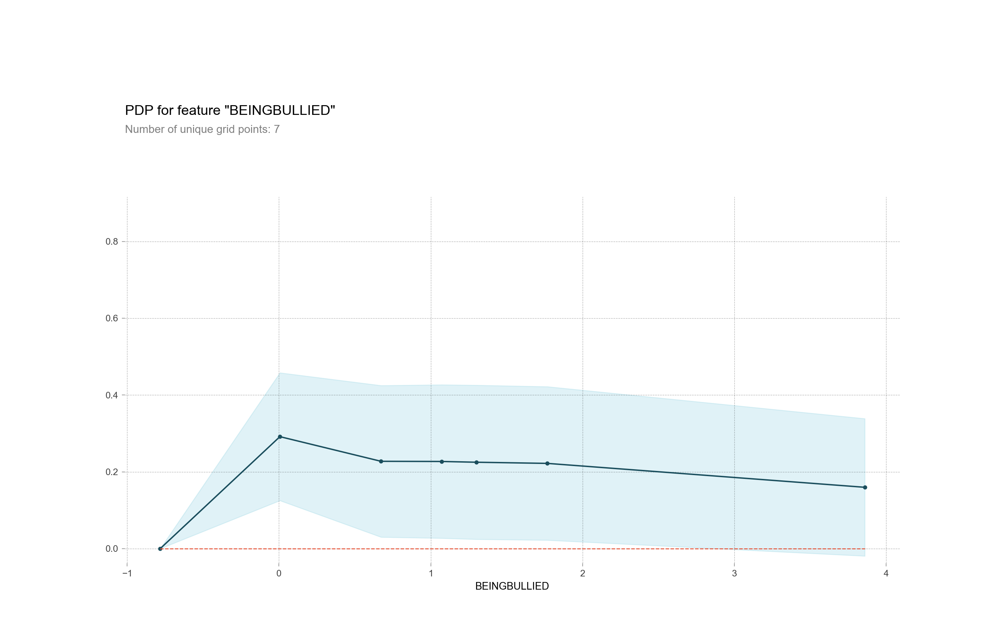
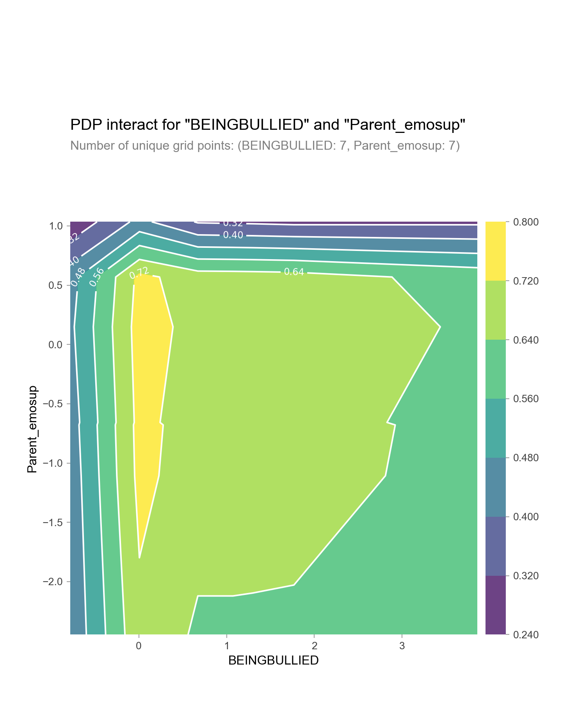

I will be applying the methods of Explanable Artificial Intelligence (XAI) to extract interpretable insights from a classification model that predicts students’ grade repetition.
(14 min read)
In my previous post on ensemble machine learning models, I mentioned that one major drawback in the artificial intelligence (AI) field is the black box problem, which hampers interpretability of the results from complex algorithms such as Random Forest or Extreme Gradient Boosting. Not knowing how the algorithm works behind the prediction could reduce applicability of the method itself as the audience can’t fully comprehend the result and therefore unable to use it to inform their decisions; this problem could therefore damage trust from the stakeholders (users, policy makers, general audience) to the field as well (McGovern et al., 2019).
On the developer’s side, fully understanding the machine learning models through the explanable approach (aka the white-box approach) allows developers to identify potential problems such as data leakage in the algorithm and fix (or debug) it with relative ease (Loyola-Gonzalez, 2019). Further, knowing which variable affects the prediction the most can inform feature engineering to reduce model complexity and direct future data collection as well by focusing on collecting the variables that matter (Becker & Cook, 2021).
On stakeholder’s side, it is important to emphasize model explanability especially in industries such as healthcare, finances, and military to foster trust between the people inside and outside of the field that could lead to the extent that the result is used to inform decisions made by humans such as financial credit approval (Becker & Cook, 2021; Loyola-Gonzalez, 2019). Clearly Understanding how, where, and why the model also benefits the model itself as users are able to identify potential problems in its performance and provide the develoeprs with their feedback (Velez et al., 2021).
The above examples knowing how to extract human-understandable insights from a complex machine learning model is important, especially in social science data where the theoretical part is as important as the methodological and the practical part. For that reason, I will be applying the methods of Explanable Artificial Intelligence (XAI) to extract interpretable insights from a classification model that predicts students’ grade repetition. We will begin by setting up the environment as usual.
import pandas as pd
import matplotlib.pyplot as plt
import seaborn as sns
from collections import Counter
from imblearn.combine import SMOTEENN
from sklearn.manifold import TSNE
from sklearn.model_selection import train_test_split
from sklearn.model_selection import RepeatedStratifiedKFold
from sklearn.model_selection import cross_val_score
from sklearn.ensemble import RandomForestClassifier
from sklearn.metrics import accuracy_score
import warnings
warnings.filterwarnings("ignore")
RANDOM_STATE = 123df = pd.read_csv("PISA_TH.csv")
X = df.drop('REPEAT', axis=1)
y = df['REPEAT']
df.head() REPEAT ESCS DAYSKIP ... Invest_effort WEALTH Home_resource
0 0 -0.7914 1 ... 6 0.0721 -1.4469
1 0 0.8188 1 ... 8 -0.3429 1.1793
2 0 0.4509 1 ... 10 0.3031 1.1793
3 0 0.7086 1 ... 10 -0.5893 -0.1357
4 0 0.8361 1 ... 10 0.5406 1.1793
[5 rows x 25 columns]The problem is that our targeted variable is imbalance; that is, the number of students who repeated a class is smaller than the number of students who did not. This situation makes sense in the real-world data as normal samples are usually more prevalent than the abnormal ones, but it is undesirable in the machine learning scenario as the model could recognize minority samples as unimportant and therefore disregard them as noises (Chawla et al., 2022). As a result, the model could give misleadingly optimistic performance on classification datasets as it classifies only students who did not repeat a class.
See the t-Distributed Stochastic Neighbor Embedding (tSNE) plot below for the visualization. There isn’t much samples of repeaters in contrary to non-repeater students. Plus, the pattern is not prominent enough as the blut dots (repeaters) stay very close to the red dots (non-repeaters). This could make the pattern difficult to be learned by the machine due to its ambiguity. One way we can mitigate this problem is to perform data augmentation via oversampling and undersampling, which synthesizes more minority samples and deletes or merges majority samples to improve performance of the machine (Budhiman et al., 2019; Wong et al;., 2016).
Counter(y)Counter({0: 8044, 1: 589})tsne = TSNE(n_components=2, random_state=RANDOM_STATE)
TSNE_result = tsne.fit_transform(X)
plt.figure(figsize=(12,8))
sns.scatterplot(TSNE_result[:,0], TSNE_result[:,1], hue=y, legend='full', palette="hls")
To balance the data, I will use both oversampling and undersampling. Normal oversampling methods duplicates minority samples for more sample size; however, this approach does not add any more information to the model (more of the same, basically). Instead, we can synthesize minority samples by creating samples that are similar to the existing minority samples; this technique is named as Synthetic Minority Oversampling TEchnique (SMOTE) (He and Ma, 2013).
Also, we can further enhance the effectiveness of SMOTE by adding undersampling into the process (Chawla et al., 2022). Instead of randomly delete our majority samples, we will use the Edited Nearest Neighbor (ENN) method, which deletes data points based on their neighbors to make the difference between majority and minority samples (Ludera, 2021). The combination of these two techniques is called SMOTEENN See Figure 1 for the example of ENN from Guan et al., (2009).
smote_enn = SMOTEENN(random_state=RANDOM_STATE, sampling_strategy = 'minority', n_jobs=-1)
X_resampled, y_resampled = smote_enn.fit_resample(X, y)
Counter(y_resampled)Counter({1: 8040, 0: 4794})tsne = TSNE(n_components=2, random_state=RANDOM_STATE)
TSNE_result = tsne.fit_transform(X_resampled)
plt.figure(figsize=(12,8))
sns.scatterplot(TSNE_result[:,0], TSNE_result[:,1], hue=y_resampled, legend='full', palette="hls")
CV = RepeatedStratifiedKFold(n_splits=10, n_repeats=2, random_state=RANDOM_STATE)
X_train, X_test, y_train, y_test = train_test_split(X_resampled, y_resampled, test_size = 0.30,
random_state = RANDOM_STATE)# random forest model creation
clf_rfc = RandomForestClassifier(random_state=RANDOM_STATE)
clf_rfc.fit(X_train, y_train)
# predictionsRandomForestClassifier(random_state=123)rfc_predict = clf_rfc.predict(X_test)
rfc_cv_score = cross_val_score(clf_rfc, X_resampled, y_resampled, cv=CV, scoring='roc_auc')
print("=== All AUC Scores ===")=== All AUC Scores ===print(rfc_cv_score)[0.98907675 0.99357898 0.99228597 0.99276793 0.99409399 0.99378369
0.9931644 0.9901627 0.98967714 0.99287747 0.99384328 0.99252177
0.99452348 0.99187137 0.99040419 0.99201929 0.9896265 0.99140778
0.99115331 0.99457436]print('\n')print("=== Mean AUC Score ===")=== Mean AUC Score ===print("Mean AUC Score - RandForest: ", rfc_cv_score.mean())Mean AUC Score - RandForest: 0.9921707177188173#define metrics for normal RF
from sklearn import metrics
y_pred_proba_rf = clf_rfc.predict_proba(X_test)[::,1]
fpr_rf, tpr_rf, _ = metrics.roc_curve(y_test, y_pred_proba_rf)
auc_rf = metrics.roc_auc_score(y_test, y_pred_proba_rf)
plt.plot(fpr_rf,tpr_rf, label="AUC for Random Forest Classifier = "+str(auc_rf.round(3)))[<matplotlib.lines.Line2D object at 0x000001EA9D9FA340>]plt.legend(loc="lower right")<matplotlib.legend.Legend object at 0x000001EA9D9FA220>plt.ylabel('True Positive Rate')Text(0, 0.5, 'True Positive Rate')plt.xlabel('False Positive Rate')
Text(0.5, 0, 'False Positive Rate')plt.title("Receiver-Operator Curve (ROC)")Text(0.5, 1.0, 'Receiver-Operator Curve (ROC)')plt.show()
# Create a pd.Series of features importances
importances_rf = pd.Series(clf_rfc.feature_importances_, index = X_resampled.columns)
# Sort importances_rf
sorted_importance_rf = importances_rf.sort_values()
#Horizontal bar plot
sorted_importance_rf.plot(kind='barh', color='lightgreen');
plt.xlabel('Feature Importance Score')Text(0.5, 0, 'Feature Importance Score')plt.ylabel('Features')Text(0, 0.5, 'Features')plt.title("Visualizing Important Features")Text(0.5, 1.0, 'Visualizing Important Features')plt.show()
import eli5
from eli5.sklearn import PermutationImportance
FEATURES = X_test.columns.tolist()
perm = PermutationImportance(clf_rfc, random_state=RANDOM_STATE).fit(X_test, y_test)
eli5.show_weights(perm, feature_names = FEATURES, top = 10)<IPython.core.display.HTML object>The permutation importance results are consistent with the feature importance score we extracted from the model. The values towards the top are the most important features, and those towards the bottom matter least. The first number in each row shows how much model performance decreased with a random shuffling (in this case, using “accuracy” as the performance metric). Like most things in data science, there is some randomness to the exact performance change from a shuffling a column. We measure the amount of randomness in our permutation importance calculation by repeating the process with multiple shuffles. The number after the ± measures how performance varied from one-reshuffling to the next.
In our example, the most important feature was “BEINGBULLIED”, which is the index of exposure to bullying. The index was constructed from questions that ask if students have experienced bullying in the past 12 months from statements such as “Other students left me out of things on purpose”; “Other students made fun of me”; “I was threatened by other students”. Positive values on this scale indicate that the student was more exposed to bullying at school than the average student in OECD countries; negative values on this scale indicate that the student was less exposed to bullying at school than the average student across OECD countries. This result is consistent with the literature that students’ grade repetition is associated with the likelihood of being bullied (Lian et al., 2021; Ozada Nazim & Duyan, 2019)
While feature importance shows what variables most affect predictions, partial dependence plots show how a feature affects predictions. For our case, partial dependence plots can be used to answer questions such as “Controlling for all variables, what impact does the index of exposure to bullying have on the prediction of grade repetition?”. The interpretation of partial dependence plot is somewhat similar to the interpretation of linear or logistic regression. On this plot, The y axis is interpreted as change in the prediction from what it would be predicted at the baseline or leftmost value. A blue shaded area indicates level of confidence.
The plot below indicates that being subjected to bullying (as reflected by having positive value of the variable) increases the likelihood of students to repeat a grade. Positive values in this index indicate that the student is more exposed to bullying at school than the average student in OECD countries. Negative values in this index indicate that the student is less exposed to bullying at school than the average student in OECD countries; therefore, having zero does not mean students did not experience any form of bullying, but rather experiencing bullying to some degree (i.e., being bullied a bit). However, the predicting power does not change much after 0, meaning that the amount of exposure to bullying does not matter in predicting students’ grade repetition.
from pdpbox import pdp
pdp_bullied = pdp.pdp_isolate(model=clf_rfc, dataset=X_test, model_features=FEATURES, feature='BEINGBULLIED')
pdp.pdp_plot(pdp_bullied, 'BEINGBULLIED')(<Figure size 1500x950 with 2 Axes>, {'title_ax': <AxesSubplot:>, 'pdp_ax': <AxesSubplot:xlabel='BEINGBULLIED'>})plt.show()
features_to_plot = ['BEINGBULLIED', 'Parent_emosup']
inter1 = pdp.pdp_interact(model=clf_rfc, dataset=X_test, model_features=FEATURES, features=features_to_plot)
pdp.pdp_interact_plot(pdp_interact_out=inter1, feature_names=features_to_plot, plot_type='contour')(<Figure size 750x950 with 3 Axes>, {'title_ax': <AxesSubplot:>, 'pdp_inter_ax': <AxesSubplot:xlabel='BEINGBULLIED', ylabel='Parent_emosup'>})plt.show()
Finally, SHAP value allows us to interpret the prediction at a fine-grained level to the components of individual predictions to show the impact of each feature. For our case, CHAP value can be used to answer questions like “On what basis did the model predict that student A is likely to repeat a grade?”. The plot is quite straightforward to interpret. The red part shows what increases the likelihood of repeating a grade, and the blue part shows what decreases the likelihood of repeating a grade.
On the plot below, the prediction is at the base alue of 0.60, meaning that it is the average of the model output. For this particular student, their likelihood to repeat a grade is increased by being exposed to bullying (BEINGBULLIED), having mediocre emotional support from parents (Parent_emosup), and having poor overall social standing as indicated by -0.9 the variable the index of socio-economic, social and cultural status (ESCS). However, the likelihood is decreased by their educational resources at home (Home_resource), having cooperative class (Stu_coop), their parents’ occupational status (Parent_occupation), and having low record of class skipping (CLASSKIP).
In addition to the breakdown of each individual prediction, we can also visualize groups of SHAP values with SHAP summary plot and SHAP dependence contribution plot. SHAP summary plots give us an overview of feature importance and what is driving the prediction. This plot is made of many dots. Each dot has three characteristics as follows: a) horizontal location (the x-axis) that indicates whether the effect of that value caused a higher or lower prediction; b) vertical location (the y-axis) that indicates the variable name, in order of importance from top to bottom. c) Gradient color indicates the original value for that variable. In booleans (i.e., yes/no variable), it will take two colors, but in number it can contain the whole spectrum.
For example, the left most point in the ‘Parent_emosup’ row is red in color, meaning that for that particular student, having greater levels of emotional support from their parents reduces their likelihood of repeating a grade by roughly 0.3. Seeing variables have a wide spread in range can be inferred that permutation importance is high; however, it is best to use permutation importance to measure which variable is important to the prediction.
Some features such as Home_resource (educational
resource at home) have reasonably clear separation between the blue and
pink dots, which implies a straightforward meaning that the increase in
the variable value lower (i.e., more resource) the likelihood of
repeating a grade while the decrease in educational resource impacts the
variable in the other direction (higher chance to repeat a
grade).
However, some variables such as Stu_coop (the degree
of cooperativeness within classrooms) have blue and pink dots jumbled
together, suggesting that the increase in this variable leads to higher
predictions, and other times it leads to a lower prediction. In other
words, both high and low values of the variable can have both positive
and negative effects on the prediction. The most likely explanation for
this “jumbling” of effects is that the variable (in this case
Stu_coop) has an interaction effect with other variables.
For example, there may be some situations where cooperating with other
students lead to social
loafing - when stduents contribute less effort when working as a
group, and therefore learns less. This interaction needs further
investigation.
shap_values_summary = explainer.shap_values(X_test)
shap.summary_plot(shap_values[1], X_test)The earlier Partial Dependence Plots to show how a single feature impacts predictions. This is insightful and relevant for many real-world use cases. The interpretation is also friendly to non-technical audience as well. However, there is a lot that we still don’t know; for example, what is the distribution of effects? Is the effect of having a certain value pretty constant, or does it vary a lot depending on the values of other feaures. SHAP dependence contribution plots provide a similar insight to the partial dependence plot, but they add a lot more detail. The plot shows scatter dots that explain how the effect a single feature has on the predictions made by the model. The plot can be read as follows: a) The x-axis is the value of the feature; b) The y-axis is the SHAP value for that feature, which represents how much knowing that feature’s value changes the output of the model prediction; c) The color corresponds to a second feature that may have an interaction effect with the feature we are plotting.
The plot below shows the relatively flat trend of the
BEINGBULLIED feature, meaning that this variable does
impact the prediction regardless of the value; this trend is consistent
with the partial dependence plot shown earlier in the post. However,
there is a sign of interaction as there are points with similar value
that produce different outcome. See the left of the 2D pane, for
example. For some students, being less exposed to bullying gives them
more chance to repeat a grade while some students got less chance. There
might be other features that interact with this variable.
While the primary trend is that being bullied increases the chance of repeating a grade , there are some variations that can be explained by the interaction of features as well. For a concrete explanation, see the right of the 2D pane. Being positioned overthere means that those students experience a lot of bullying, but their chance of repeating a grade is relatively lower than those who experience less bullying. One explanation is that some of those students have positive feelings for themselves (indicated by the red color), which could make them more resilient toward being bullied.
shap.dependence_plot('BEINGBULLIED', shap_values_summary[1], X_test, interaction_index="Positive_feel")Text and figures are licensed under Creative Commons Attribution CC BY 4.0. The figures that have been reused from other sources don't fall under this license and can be recognized by a note in their caption: "Figure from ...".
For attribution, please cite this work as
Wongvorachan (2022, May 5). Tarid Wongvorachan: Making Sense of Machine Learning with Explanable Artificial Intelligence. Retrieved from https://taridwong.github.io/posts/2022-04-28-xai/
BibTeX citation
@misc{wongvorachan2022making,
author = {Wongvorachan, Tarid},
title = {Tarid Wongvorachan: Making Sense of Machine Learning with Explanable Artificial Intelligence},
url = {https://taridwong.github.io/posts/2022-04-28-xai/},
year = {2022}
}